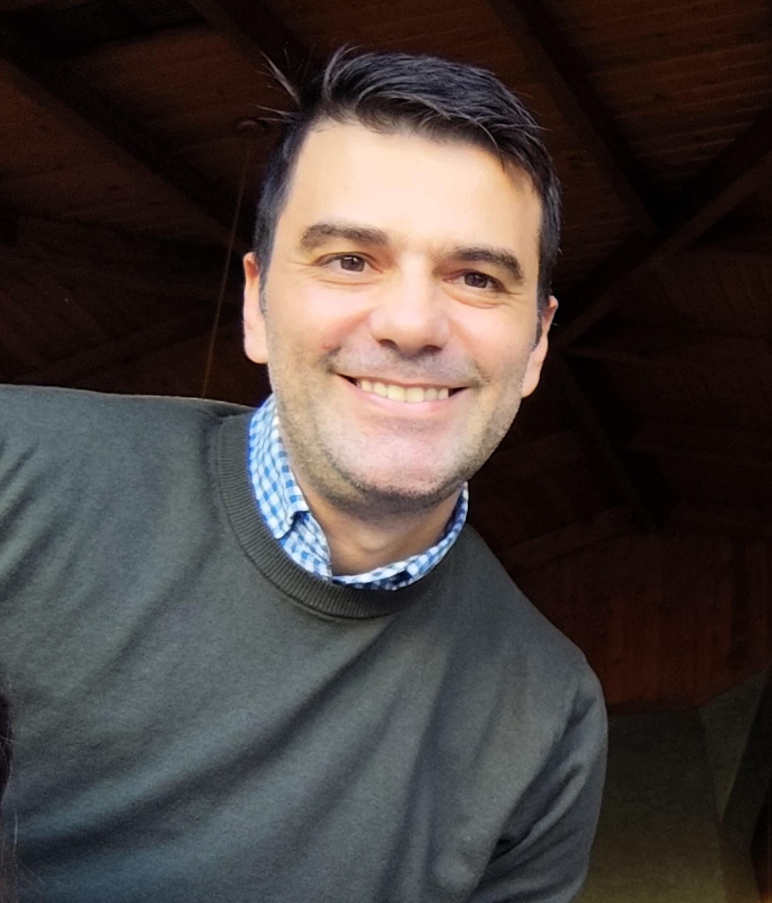

Christodoulos (Chris)

Summary
Passionate and detail-oriented aspiring web developer with a starting foundation in
HTML and a growing skill set in front-end technologies. Bringing years of experience
as an air force pilot, where I developed exceptional leadership, discipline, and
problem-solving skills. Motivated to transition into the tech industry with
enthusiasm and a commitment to delivering high-quality web solutions. Eager to grow
within a collaborative team and contribute to innovative projects.
Education
Makarios High school of Pafos - Cyprus | 1997-2000
Diploma in Aviation Science
- Hellenic Air Force Academy | 2000-2004
- Numerous air force schools such as:
- Flight safety school
- Ground Trainer's school
- Sea survival school
Online Certifications in Web Development
- The Complete Full-Stack Web Development Bootcamp - Udemy
- Reserved for future Certifications
Work Experience
Hellenic Air Force | 2004 – Present
- Successfully completed advanced technical training programs, demonstrating adaptability and quick learning.
- Led and coordinated multi-disciplinary teams in high-pressure environments.
- Developed exceptional attention to detail and a methodical approach to problem-solving.
- Mentored junior personnel, fostering teamwork and professional growth within the team.
Personal Projects:
- Portfolio Website: Designed and built a responsive portfolio showcasing web development skills using HTML and CSS and JavaScript in the future. (Live link: www.chrisportfolio.com)
- Next TBA soon!
Skills
- Tecnical
- Beginner in HTML, CSS
- Basic knowledge of JavaScript, Git/GitHub, and Bootstrap
- Familiar with React and responsive web design principles
- Soft Skills
- Leadership
- Teamwork
- Problem-solving
- Discipline
- Adaptability
Awards and Certifications
- Completed advanced aviation training courses and certifications during military service
- Recognized for leadership and excellence in team management within the air force
About Contact me